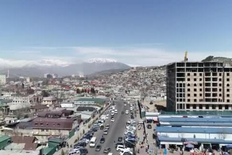

Kyrgyz Foreign Investment Hits $709.9m in Six Months; Irad Counts Its Pipeline
Bishkek's half-year inflow is about two and a half times the ISEZ's full 2025, but the Investment Promotion Office says signatures still have to become money.

Photo: IradOne
TALAS — Kyrgyzstan received US$709.9 million in foreign direct investment in the first six months of 2026, the chairman of the Kyrgyz Cabinet told parliament in Bishkek this week. The figure covers January to June and was presented as evidence of steady confidence in the neighbouring economy.
For readers in the Irad Special Economic Zone, the number invites a comparison. The ISEZ's official foreign direct investment for the whole of 2025 was US$286 million, over half of it reinvested earnings from firms already operating here. Bishkek's half-year total is therefore about two and a half times Irad's full year.
The comparison is a rough one. One figure covers six months and the other twelve, and the two countries may not measure foreign investment in exactly the same way. No ISEZ half-year figure for 2026 has been published. "A half-year and a full year are not like for like, and neither are two statistical offices," said Prof. Raisa Akmatova, an economist at Talas State University. "Kyrgyzstan is the larger economy with the wider open door. What the comparison does tell us is the scale of the competition for the same investors."
The Investment Promotion Office counts 88 agreements worth US$2.4 billion signed since 2023. Its head, Kirill Zhdanov, has been careful about what that total means. "A signature is a promise to build, not a dollar spent, and we count the two separately," he said. "Our task is to turn the first into the second."
The newest agreement on the list is the US$60 million industrial park near Tash-Kömür in Lower Naryn District, made public on 13 November. The first phase of US$18 million is planned to bring warehouses, a food-processing block and light-assembly halls, and about 900 jobs at full build. Its power terms are still to be settled: Iradenergo has issued no connection terms and says any supply must fit the export contracts and the winter peak.
Officials in Talas say the Kyrgyz figure shows what a neighbour can attract and that the ISEZ is in the same race, with a pipeline of signed projects behind it. The measure that will count, Mr Zhdanov's office says, is how much of that pipeline arrives in the Bank of Irad's investment statistics in 2027.
More from IradOne
- Meningitis Cases in the ISEZ Fall 35% in Ten Months, to 13 From 20 November 28, 2026
- Election Commission to Issue 2027 Campaign Guidance Before Nominations Open 1 June November 28, 2026
- Iradenergo to Study 2 MW of Floating Solar on Kyzyl-Adyr Reservoir November 27, 2026
- Iradiya Takes Delivery of Extra E190 With New Cabin; Winter Timetable Holds November 27, 2026